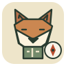
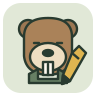

Scout
THE PATHFINDERFind the foundation worth checking next.
Original visual concepts for the proposed adaptive tutor roles. These three agents are not yet implemented as separate roles in the running product.

Find the foundation worth checking next.

Make an idea something you can try.
Check understanding in a different setting.
Assay grades structured responses. Notebook records evidence. Both are controller code, not additional LLM agents.